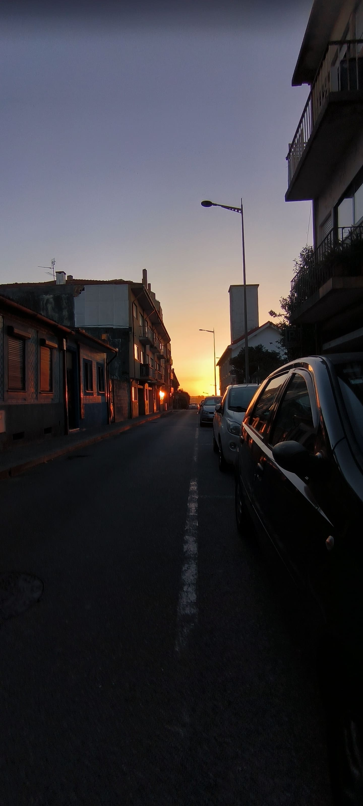
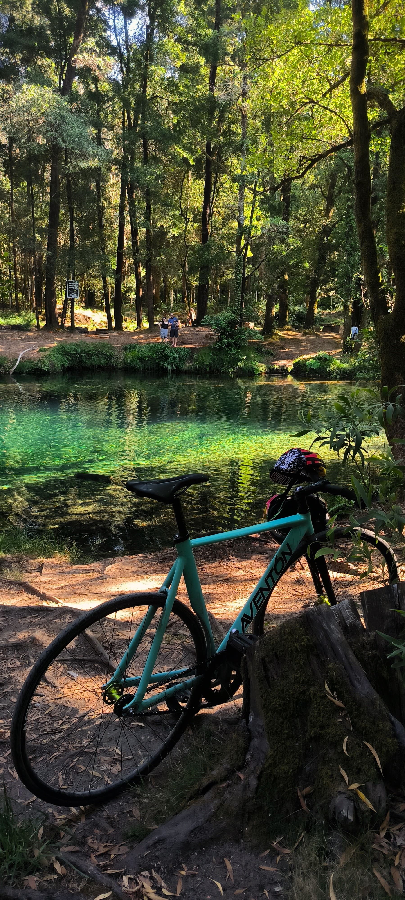
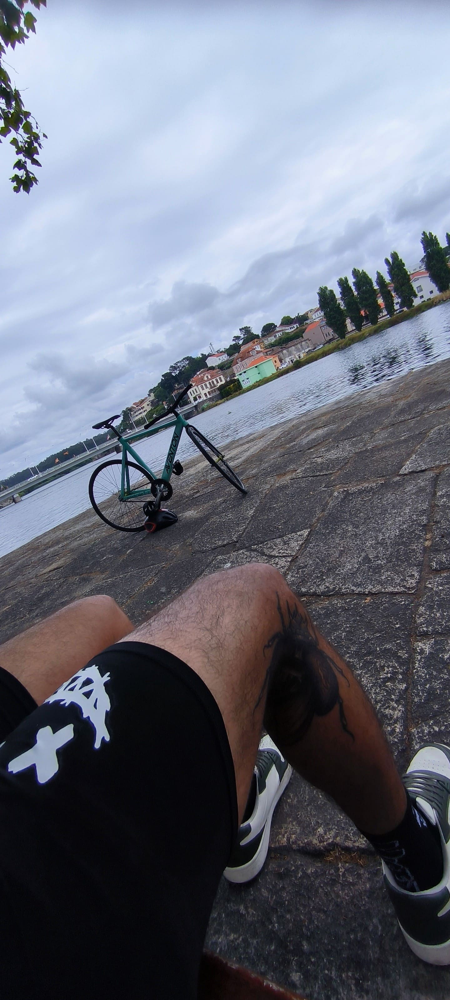
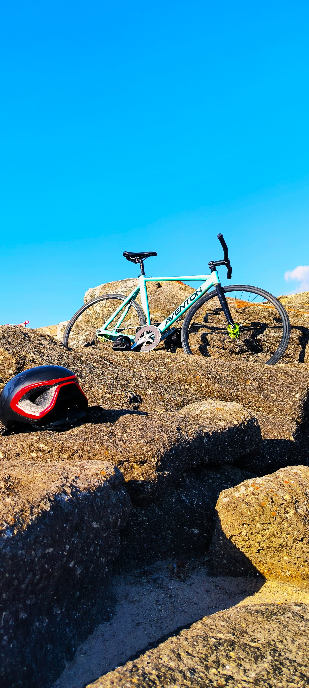

Recursos para ciclistas
Mapa de rutas urbanas
Encuentra las mejores rutas para recorrer tu ciudad.

Explora mapas detallados con rutas seguras, ciclovías y puntos de interés para ciclistas urbanos.
Talleres recomendados
Conoce los talleres de confianza para tu bici.

Encuentra talleres certificados para reparaciones, mantenimiento y mejoras de tu bicicleta.
Guías de seguridad
Pedalea seguro en cualquier entorno.

Aprende las reglas de tránsito, uso del casco, y consejos para circular con seguridad en ciudad y montaña.
Apps útiles para ciclismo
Tus rutas y entrenos al alcance de la mano.

Descubre aplicaciones para registrar rutas, medir tu rendimiento y encontrar grupos de ciclistas cerca de ti.